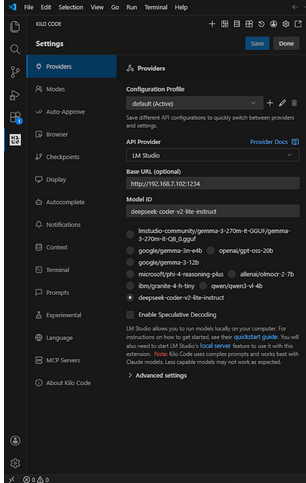
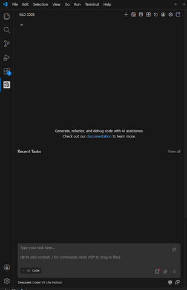
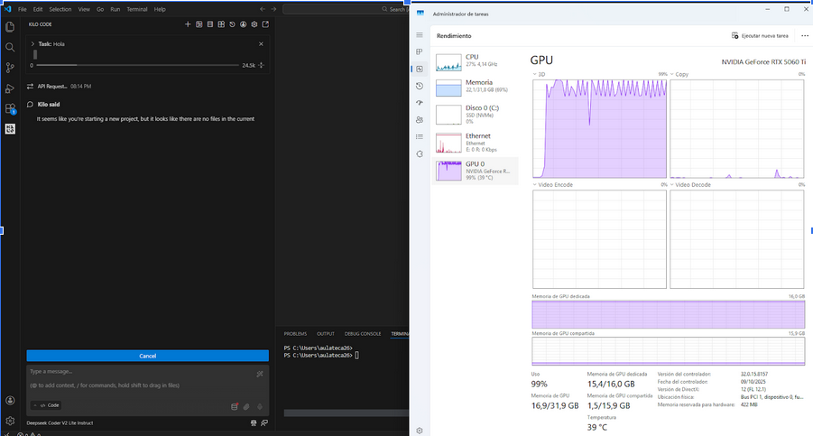
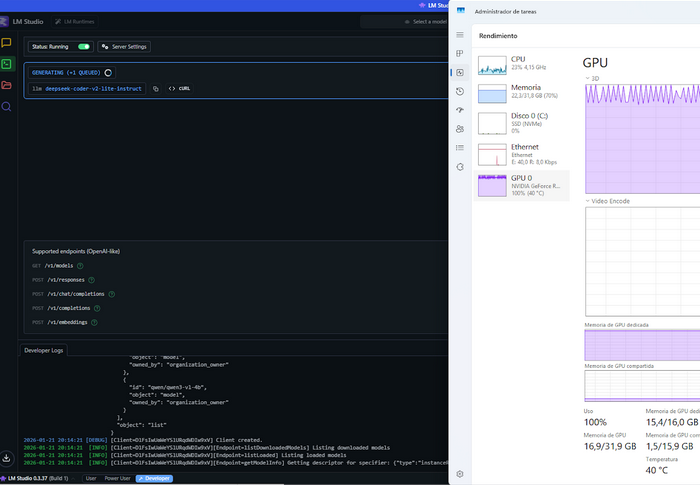

📚 Introducción
Práctica: Implementación de Agente IA Local
Fecha: 15 de enero de 2026
Objetivo: Configurar y utilizar un agente de IA con modelo local ejecutándose en GPU
Stack tecnológico
🖥️ LM Studio
Plataforma para ejecutar LLMs localmente con servidor API.
💻 Continue
Extensión de VS Code para chat con agentes IA.
🧠 Deepseek Coder V2
Modelo especializado (11.45 GB, Q4_K_M).
🎮 RTX 5060 Ti
GPU con 16GB VRAM.
⚙️ Configuración
Hardware
| Componente | Especificación |
|---|---|
| GPU | NVIDIA GeForce RTX 5060 Ti |
| VRAM | 16 GB |
Pasos realizados
- Instalar LM Studio
- Descargar modelo deepseek-coder-v2-lite-instruct (Q4_K_M, 11.45 GB)
- Iniciar servidor local en http://192.168.1.102:1234
- Instalar extensión Continue en VS Code
- Configurar Continue:
- API Provider: LM Studio
- Model ID: deepseek-coder-v2-lite-instruct
Configuración de LM Studio y Continue

La imagen muestra:
- LM Studio: Modelo deepseek-coder-v2-lite-instruct cargado
- Tamaño: 11.45 GB
- Cuantización: Q4_K_M
- Servidor: http://192.168.1.102:1234 (activo)
- VS Code: Continue configurado con API Provider = LM Studio
- Model ID: deepseek-coder-v2-lite-instruct
📸 Análisis de Capturas
Chat con el agente

En esta captura se observa:
- Tarea creada: "Task: Hola"
- Respuesta del agente: "It seems like you're starting a new project, but it looks like there are no files in the current..."
- Problema detectado: El agente indicó que no había archivos en el workspace de VS Code
Consumo de GPU al preguntar "hola"

Task Manager mostrando el rendimiento cuando se pregunta "hola":
- GPU: NVIDIA GeForce RTX 5060 Ti
- Utilización: 99%
- VRAM: 15.4 / 16.0 GB ocupada (96%)
- Temperatura: 40°C
Consumo de GPU al generar código

Task Manager durante la generación de código:
- Utilización GPU: 100%
- VRAM: 15.4 / 16.0 GB ocupada
- Temperatura: 40°C (estable)
- Código visible:
def sumar(a, b): return a + b
Métricas observadas
| Escenario | Utilización GPU | VRAM ocupada | Temperatura |
|---|---|---|---|
| Pregunta "hola" | 99% | 15.4 GB | 40°C |
| Generación código | 100% | 15.4 GB | 40°C |
❌ Problemas Encontrados
Problema 1: Error "no files in current..."
Visible en: chat.png
Descripción: El agente respondió que no había archivos en el workspace.
Causa: VS Code no tenía ninguna carpeta de proyecto abierta.
✅ Solución:
- Abrir VS Code en una carpeta de proyecto:
code /ruta/proyecto - O usar File → Open Folder (Ctrl+K Ctrl+O)
- Los agentes funcionan mejor cuando tienen contexto de archivos
Problema 2: VRAM casi saturada
Visible en: consumopregunta.png y consumo.png
Descripción: VRAM en 15.4/16.0 GB (96% ocupada).
Implicación: Solo quedan 0.6 GB libres, sin margen para otras aplicaciones GPU.
✅ Recomendaciones:
- Usar modelos cuantizados (Q4_K_M) en lugar de versiones completas
- Cerrar navegadores y apps que usen GPU antes de ejecutar el modelo
- Para uso profesional, considerar GPU con 24GB+ de VRAM
Observación: GPU al máximo con temperatura baja
Visible en: consumopregunta.png y consumo.png
Dato: GPU al 99-100% de utilización pero temperatura de solo 40°C.
Análisis: Esto es positivo, indica buena refrigeración del sistema.
✅ Conclusión:
- La inferencia de modelos LLM no genera tanto calor como gaming
- El sistema tiene buena ventilación
- No hay riesgo de throttling térmico
💡 Aprendizajes
🔧 Técnicos
- Cuantización esencial: El modelo Q4_K_M de 11.45 GB permite ejecutarlo en 16GB de VRAM. La versión sin cuantizar no cabría.
- VRAM limitada: Con 15.4 GB usados de 16 GB totales, hay muy poco margen. 16GB es el mínimo absoluto para este tipo de modelos.
- GPU al máximo es normal: Los modelos LLM usan toda la capacidad disponible durante la inferencia.
- Temperatura engañosa: 40°C con 100% de uso demuestra que la inferencia no es tan térmica como otras cargas GPU.
- Contexto importa: El error "no files" muestra que los agentes necesitan archivos en el workspace para funcionar bien.
📚 De proceso
- Monitorización necesaria: Task Manager fue esencial para ver el uso real de recursos.
- Leer mensajes del agente: El mensaje "no files in current..." fue una pista clara del problema.
- Capturar pantallas: Documentar configuración, chat y Task Manager ayuda a analizar después.
✅ Mejores prácticas
- Abrir carpeta de proyecto: Siempre tener un workspace cargado en VS Code antes de usar el agente
- Cerrar apps GPU: Navegadores y juegos antes de iniciar el modelo
- Monitorizar recursos: Tener Task Manager visible para controlar VRAM
- Modelos cuantizados: Usar Q4_K_M o similar para optimizar uso de VRAM
🎯 Conclusiones
La práctica demostró que es posible ejecutar agentes IA locales en una RTX 5060 Ti de 16GB. El sistema LM Studio + Continue + deepseek-coder funcionó correctamente, aunque con la VRAM muy ajustada.
Puntos positivos
- ✅ Configuración exitosa y modelo funcional
- ✅ Temperatura excelente (40°C) pese al 100% de uso
- ✅ Código generado correctamente (función Python)
- ✅ Privacidad total: modelo ejecutándose localmente
Limitaciones
- ⚠️ VRAM casi al límite (15.4/16 GB - 96%)
- ⚠️ Poco margen para multitarea GPU
- ⚠️ Necesita workspace con archivos para funcionar bien
📢 Recomendación
Una RTX 5060 Ti de 16GB es suficiente para experimentar con modelos cuantizados, pero para uso profesional continuo se recomienda 24GB+ de VRAM.